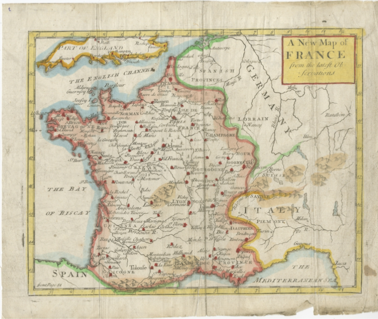
In 2020, I had a pilgrimage planned to Sainte-Baume, the hermitage where tradition says St. Mary Magdalene lived out her life after the Resurrection. I ended up cancelling due to Covid restrictions, but kept the pilgrimage in mind for some future date.
In 2025, I was able to make the pilgrimage a reality. I would arrive in Paris, then travel to Chartres, Marseille, Saint-Baume, Saint-Maximin-la-Sainte-Baume, then back to Paris. It was a remarkable journey, and I hope the following photos and information blesses you.
The location of Sainte-Baume and the traditions that arise from it and the surrounding areas of Provence are perhaps not familiar to those of us outside of France. There are various stories, but a common one is that St. Mary Magdalene and her sister St. Martha and brother St. Lazarus were set adrift on the Mediterranean Sea by persecutors. Lacking any sails or oars, they drifted to Marseille and began preaching about Jesus Christ. Lazarus became the first bishop of the city, while Martha went west and lived a religious life with other virgins at Tarascon. Mary Magdalene went east to Sainte-Baume.
It was in a cave on that mountain range where she lived out the rest of her life in penitance as a hermitess. I was fascinated by this tradition ever since learning about it many years ago from some French spiritual authors. St. Charles de Foucauld, whose spirituality I follow, had a great devotion to the Magdalene and Sainte-Baume, and visited it several times. In 2013, It was a central theme of a retreat that I preached for a community of religious women, the Apostles of the Interior Life. After the retreat, I put the retreat meditations in book form in Like a Dove in the Cleft of the Rock. In it, I expand on the tradition of Sainte-Baume. If you are interested in reading the book, you can find it here.
I will add more details as we go along, so let's begin!
-Matthew
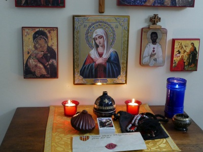 Before I left, I asked friends and family for any prayer intentions they'd like me to bring on the pilgrimage and leave at the tomb of St. Mary Magdalene. I offered the sealed intentions document and my own pilgrimage items before I left, asking for God's blessings and the prayers of the saints. At many spots along the way, I photographed the intentions document as a way to document its "travels". |
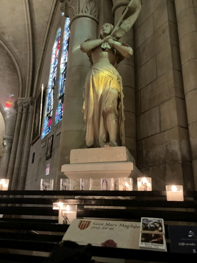
My hotel was near the massive Basilica of Sacreé Coeur de Montmartre, so I climbed the hill to see it and first entered the smaller Saint-Pierre de Montmartre, the second-oldest surviving church in Paris. Inside, I visited St. Joan of Arc... |
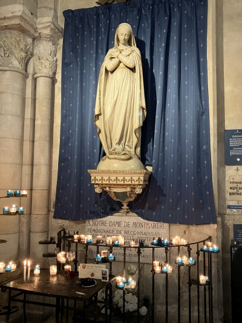
...and Our Lady of Montmartre |
|---|---|---|
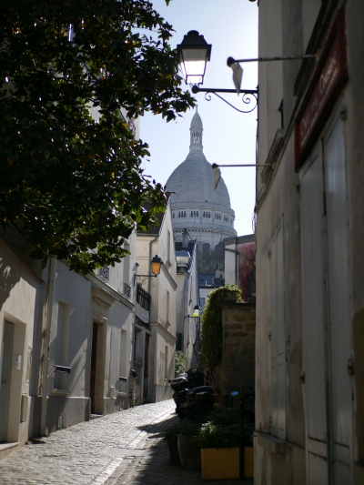 In the distance looms the basilica. |
Statue of St. Michael the Archangel |
The archtecture has a wonderful symmetry and pulls your vision upwards. |
|
Another example of symmetry - King St. Louis holds his cruciform sword by the blade, which I think symbolizes peace and an end to conflict, and Christ raises his right hand in blessing. |
The interior of the basilica |
One of the most important promises I fulfilled while on pilgrimage was to visit the grace of Renée Falconetti, the actress who portrayed St. Joan of Arc in the 1928 film. She was previously an actress in light comedies, and this role was her only film appearance. It's considered one of the greatest performances in cinema, and watching the film with Richard Einhorn's Voices of Light soundtrack is truly a spiritual experience. Her later life was one of great suffering and mental illness. |
"To create is to live twice." - Camus |
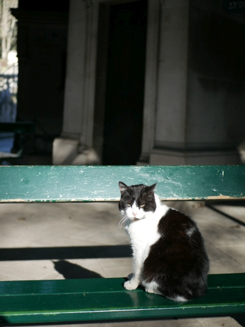
The cemetery where Renée is buried, Montmartre Cemetery, is famous for its feline residents. |
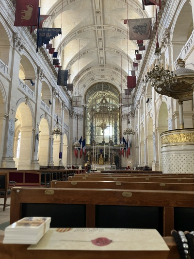
The Cathedral of Saint-Louis-des-Invalides, the seat of the bishop who serves the Armed Forces. Les Invalides was a soldiers' retirement home that is now a vast complex of military museums, churches, and the tomb of Napoleon. The hanging flags were captured in battle over the centuries. |
|
The Tomb of Napoleon |
Panorama of the Seine |
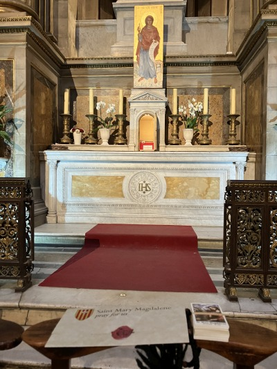
Inside La Madeleine church, an enormous structure that Napoleon had wanted dedicated to the glories of his army. It is now dedicated to St. Mary Magdalene. This chapel contains one of her relics (next photo). |
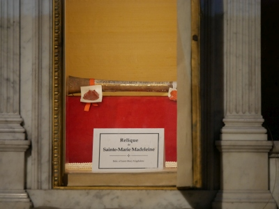
Her femur ("os femoris") |
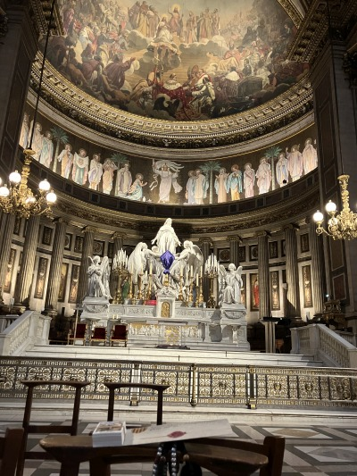
The stupendous sanctuary at La Madeleine |
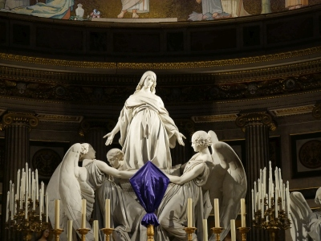
The sculpture on the high altar. Notice that she is dressed in penitential garb with a rope cincture around her waist symbolizing chastity. She is also being lifted by three angels. Remember this detail, as it will figure prominently at Sainte-Baume. |
|
North of central Paris is the Basilica of Saint-Denis, one of the most important places in France. It is here that many of her kings and queens are buried, and where her queens were crowned. |
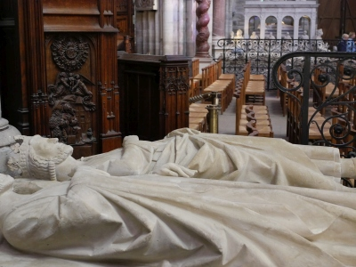
The grave of Charles Martel ("The Hammer") at Saint-Denis. He stopped the Muslim invasion at Tours. |
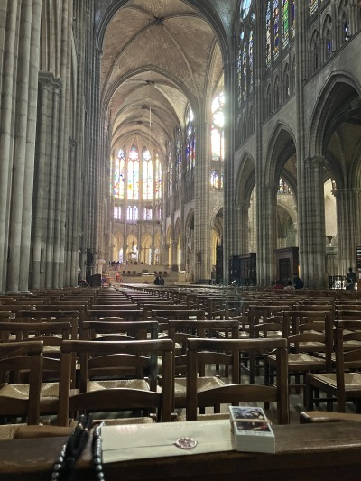
Facing the sanctuary at Saint-Denis |
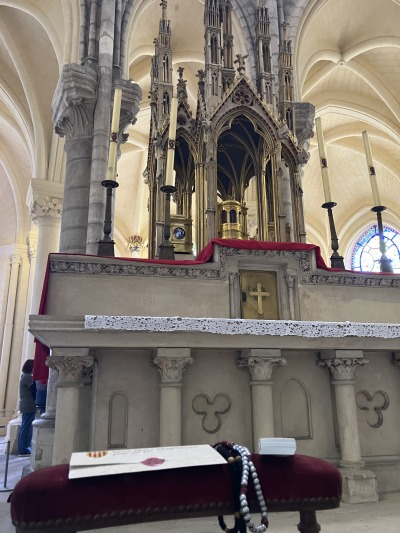
The high altar at Saint-Denis containing the relics of Saints Denis, Eleutherius, and Rusticus, who were martyred in Paris in the 3rd century. Visit this site for more on the history of the saints and the basilica. |
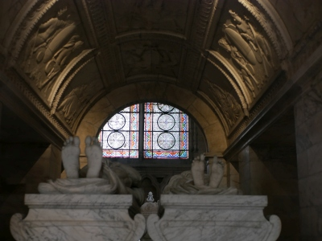
Two sarcophagi at Saint-Denis |
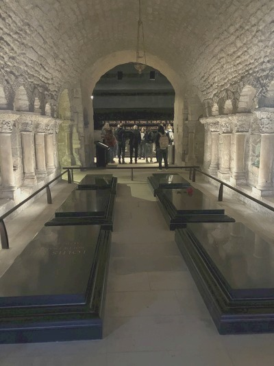
The crypt under Saint-Denis contains not only an ancient burial area seen in the distance, but the graves of more recent royalty. The middle row of black tombs are Louis XVI (left) and Mary Antoinette (right with rose), victims of the Revolution. |
The ancient burial ground where the saints' relics were found |
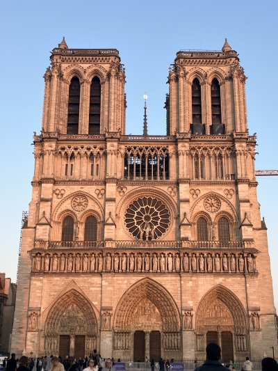
Notre Dame |
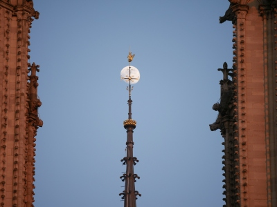
Detail of the moon behind the spire. The moon is an ancient analogy for Our Lady ("Notre Dame"), who reflects the glory of God. |
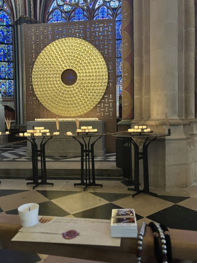
The reliquery containing the Crown of Christ, Notre Dame |
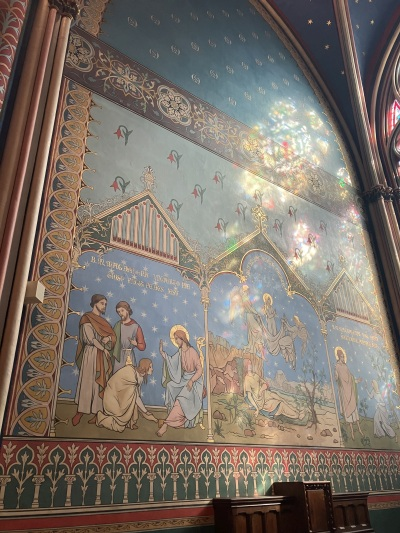
Artwork of the Magdelene in Notre Dame. On the left she anoints the feet of Christ. On the right, she meets Him in the garden after the Resurrection. In the middle, she is a penitent at Sainte-Baume and we see the angels carrying her soul and the word "transitus" - it's the moment of her death. |
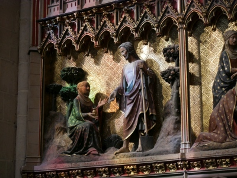
Another work in Notre Dame depicting the Magdalene meeting Christ in the garden. He is carrying a spade, a reference to her mistaking Him for the gardener. The interplay of colors from the evening sun striking the work through stained glass was quite lovely. |
Praying with your intentions in Notre Dame |
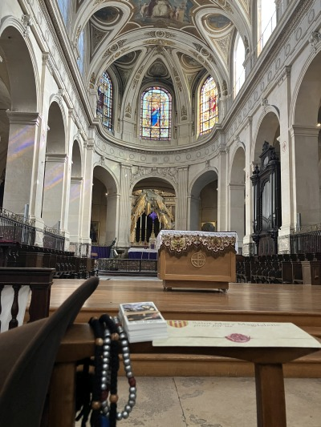
The church of Saint-Roch, one of the major patrons of pilgrims. Outside this church, in the later days of the Revolution, Napoleon opened fire with a line of cannon against a mass of Royalists. It was this event that Thomas Carlyle famously described as Napoloen giving his opponent a "Whiff of Grapeshot" and that "the thing we specifically call French Revolution is blown into space by it." It was the effectual end of the Revolution, and marks from the grapeshot can still be seen on the church. |
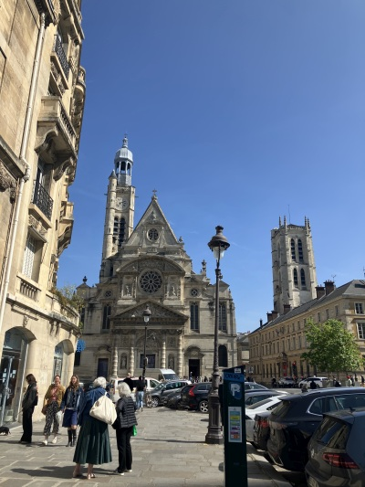
The church of Saint-Etienne du Mont, which contains one of the most beautiful shrines in France. |
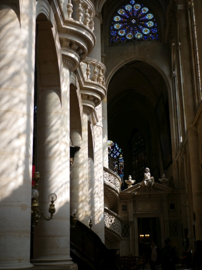
The famous rood screen and marble stairway from 1530 in Saint-Etienne |
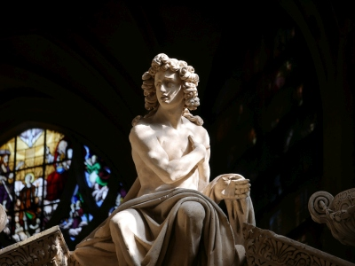
Detail of statue on rood screen |
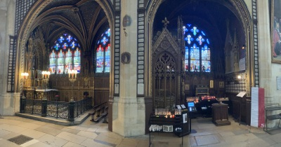
Panorama of the extraordinary chapel of Saint Genevieve in the church of Saint-Etienne. Saint Genevieve shares the title of patroness of Paris with Saint Denis, for her prayers saved Paris from Atilla the Hun. |
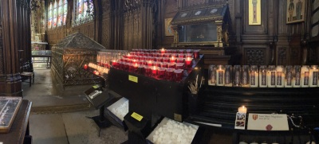
Panorama with your intentions |
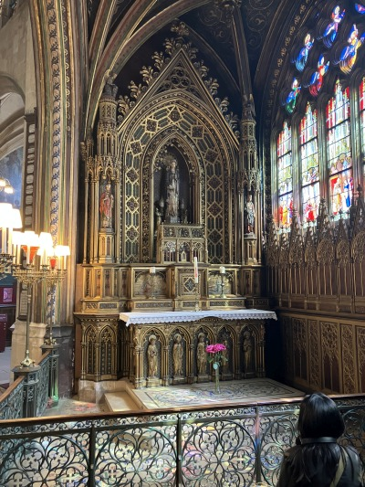
Altar of Saint Genevieve |
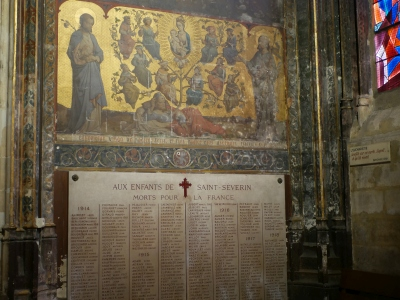
A roll of the WWI dead from the parish of Saint-Severin |
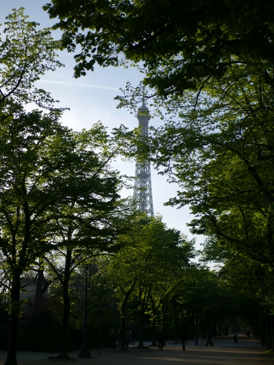
How could I forget to post the Eiffel Tower? |
||